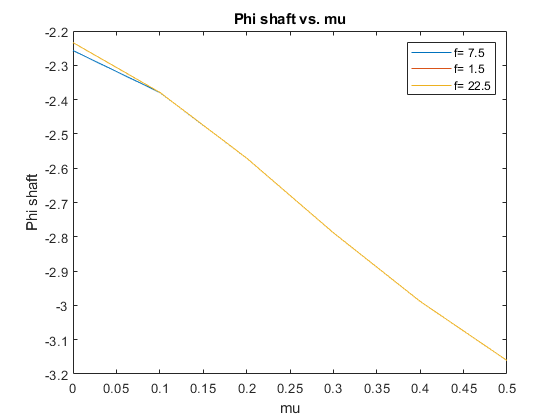

Contents
clc
clear
close all
Constants
Nb = 4; R = 20; %ft c = 1; %ft v_tip = 650; %ft/sec W = 20000; %lbs h = 5; %ft a = 5.7; %per x_cg = 0; %ft vb = 1.04; lock = 10; cd0 = 0.012; L_tr = 25; %ft ; f = 15; %ft^2 y_cg = 0; k = 1.15; rho_0 = 0.002378;
General
h_alt = 0; rho = rho_0*exp(-0.0297*h_alt/1000); A = pi*R^2; omega = v_tip/R; psi_d = 0:1:360; psi = 0:pi/180:2*pi;
Question 1a
Hover advance ratio = 0
mu_hover = 0; T_hover = W; theta_tw = 0; %page 8 sigma = (Nb*c)/(pi*R); CW = W/(rho*(pi*R^2)*(v_tip)^2); CT = CW; CP_hover = k*(CT^(3/2))/sqrt(2) + (sigma*cd0/8); YF_W_hover = CP_hover*R/CT/L_tr; lambda_TPP_hover = k*sqrt(CT/2); CH_TPP_hover = 0; CY_TPP_hover = 0; M_yF_hover = 0; M_xF_hover = 0; beta_1c_hover =((-x_cg/h)+(M_yF_hover/(W*h))+(CH_TPP_hover/CT))/(1+(((vb^2)-1)/(lock*(2*h*CT/R/sigma/a)))); beta_1s_hover =((y_cg/h)-(M_xF_hover/(W*h))+(CY_TPP_hover/CT))/(1+(((vb^2)-1)/(lock*(2*h*CT/R/sigma/a)))); alpha_shaft_hover =(((x_cg/h)-(M_yF_hover/(W*h))+(((((vb^2)-1)/(lock*(2*h*CT/R/sigma/a))))*CH_TPP_hover/CT))) /... (1+ (((vb^2)-1)/(lock*(2*h*CT/R/sigma/a))) ); phi_shaft_hover = ((((y_cg/h)-(M_xF_hover/(W*h)) -(((((vb^2)-1)/(lock*(2*h*CT/R/sigma/a))))*CY_TPP_hover/CT))) / ... (1+(((vb^2)-1)/(lock*(2*h*CT/R/sigma/a))))) - (CP_hover*R/CT/L_tr); theta_knot_hover = (((6*CT/sigma/a)*(1+((3/2)*(mu_hover^2)))) -((0.75*theta_tw)*(1-(1.5*mu_hover^2)+(1.5*mu_hover^4))) + ... (1.5*lambda_TPP_hover*(1-(0.5*mu_hover^2)))) +((4/lock)*mu_hover*((vb^2)-1)*beta_1s_hover) / (1 - (mu_hover^2) +(9/4*mu_hover^4)); theta_1s_hover = -beta_1c_hover +((1/(1+(1.5*mu_hover^2)))*((-8/3*mu_hover*(theta_knot_hover+ (0.75*theta_tw) -(0.75*lambda_TPP_hover)))+... ( (8/lock)*((vb^2)-1)*(beta_1s_hover) ) )); beta_knot_hover = (lock/vb^2)*((theta_knot_hover/8)+(theta_tw/10)-(lambda_TPP_hover/6)); %Beta_p_hover is zero theta_1c_hover = beta_1s_hover +((1/(1+(0.5*mu_hover^2)))*((4/3*mu_hover*beta_knot_hover) +((8/lock)*((vb^2)-1)*beta_1c_hover)));
Question 1b
v_inf= 200; %ft/s mu_FF = 200/v_tip ; %cos(alpha) = 1 assuming alpha is small v_climb_FF = 0; % edgewise forward flight gamma is small v_inf*sin(gamma) = 0 lambda_climb_FF = v_climb_FF/v_tip; lambda_TPP_FF = zeros(1,100); lambda_TPP_FF(1) = k*sqrt(CT/2); CP_FF = ((k*CT^2)/(2*mu_FF)) + ((sigma*cd0/8)*(1+(4.6*mu_FF^2))) + ((1/2)*(f/A)*(mu_FF^3))+ (lambda_climb_FF*CT); YF_W_FF = CP_FF*R/CT/L_tr; CH_TPP_FF(1) = 0; CY_TPP_FF(1) = 0; err = 1; while err > 0.005 for n = 1:100 lambda_TPP_FF(n+1) = CT/(2*sqrt((mu_FF^2)+(lambda_TPP_FF(n))^2)) +((1/2)*(f/A)*(mu_FF^3/CT)); M_yF_FF = 0; M_xF_FF = 0; beta_1c_FF(n) = ( (-x_cg/h) + (M_yF_FF/(W*h)) ... + (CH_TPP_FF(n)/CT)) / ( 1+((((vb^2)-1)*R*sigma*a)/(lock*2*h*CT)) ); beta_1s_FF(n) = ((y_cg/h) - (M_xF_FF/(W*h))... +(CY_TPP_FF(n)/CT))/(1+(((vb^2)-1)/(lock*(2*h*CT/R/sigma/a)))); alpha_shaft_FF(n) = ((((x_cg/h) - (M_yF_FF/(W*h)) +((((vb^2)-1)*R*sigma*a)/(lock*2*h*CT))*CH_TPP_FF(n)/CT))) / ... (1+((((vb^2)-1)*R*sigma*a)/(lock*2*h*CT))) + ((1/2)*(f/A)*(mu_FF^2)/CT); phi_shaft_FF(n) = (((y_cg/h) - (M_xF_FF/(W*h)) -(((((vb^2)-1)*R*sigma*a)/(lock*2*h*CT))*CY_TPP_FF(n)/CT)) / ... (1+((((vb^2)-1)*R*sigma*a)/(lock*2*h*CT)))) - (CP_FF*R/CT/L_tr); theta_knot_FF(n) = ((6*CT/sigma/a)*(1+(3/2*mu_FF^2)) -((0.75*theta_tw)*(1-(1.5*mu_FF^2)+(1.5*mu_FF^4))) + ... ((1.5*lambda_TPP_FF(n))*(1-(0.5*mu_FF^2))) + ((4/lock)*mu_FF*((vb^2)-1)*beta_1s_FF(n)))/ (1 - (mu_FF^2) +(9/4*mu_FF^4)); theta_1s_FF(n) = -beta_1c_FF(n) +((1/(1+(1.5*mu_FF^2)))*((-8/3*mu_FF*(theta_knot_FF(n)+(0.75*theta_tw) - ... (0.75*lambda_TPP_FF(n)))) + ( (8/lock)*((vb^2)-1)*(beta_1s_FF(n)) ) )); beta_knot_FF(n) = (lock/vb^2)* ( ((1+(mu_FF^2))*theta_knot_FF(n)/8) +((1+mu_FF^2)*theta_tw/10) + ... ((1/6)*mu_FF*(beta_1c_FF(n)+ theta_1s_FF(n))) - (lambda_TPP_FF(n)/6) ) ; theta_1c_FF(n) = beta_1s_FF(n) + ( (1/(1+(0.5*mu_FF^2))) * ((4/3*mu_FF*beta_knot_FF(n))+ ((8/lock)*((vb^2)-1)*beta_1c_FF(n))) ) ; CH_TPP_FF(n+1) = ((sigma*a/2)*((((1/2)*mu_FF*lambda_TPP_FF(n)*(theta_knot_FF(n)+(0.5*theta_tw)))) - ... (((1/6)*beta_knot_FF(n)*theta_1c_FF(n)) + ((1/4)*theta_1s_FF(n)*lambda_TPP_FF(n)) +((1/4)*mu_FF*beta_knot_FF(n)^2)))) + (sigma*cd0*mu_FF/4); CY_TPP_FF(n+1) = -(sigma*a/2)* (((3/4)*mu_FF*beta_knot_FF(n)*(theta_knot_FF(n)+((2/3)*theta_tw))) + ... ((1/4)*theta_1c_FF(n)*lambda_TPP_FF(n)) +((1/6)*beta_knot_FF(n)*theta_1s_FF(n)*(1+(3*(mu_FF^2)) )) -((3/2)*mu_FF*beta_knot_FF(n)*lambda_TPP_FF(n)) ); err = abs(lambda_TPP_FF(n+1) - lambda_TPP_FF(n)); end end figure(1) title("Convergence") hold on xlabel("Iterations") ylabel("Angles in Degrees") plot(beta_1c_FF*180/pi) plot(beta_1s_FF*180/pi) plot(alpha_shaft_FF*180/pi) plot(phi_shaft_FF*180/pi) plot(theta_knot_FF*180/pi) plot(theta_1s_FF*180/pi) plot(beta_knot_FF*180/pi) plot(theta_1c_FF*180/pi) legend("Beta 1c", "Beta 1s", "Theta 1s", "Theta 1c",... "Alpha shaft","Phi shaft","Beta knot","Theta knot") for z = 1:361 r = 0.8*R; theta_FF(z) = theta_knot_FF(50) + (theta_1c_FF(50)*cos(psi(z))) +theta_1s_FF(50)*sin(psi(z)); beta_FF(z) = beta_knot_FF(50) + beta_1c_FF(10)*cos((psi(z))) +beta_1s_FF(50)*sin((psi(z))); beta_FF_dot(z) = - beta_1c_FF(50)*sin((psi(z))) + beta_1s_FF(50)*cos((psi(z))); ut_FF(z) = omega*r + (mu_FF*omega*R*sin(psi(z))); up_FF(z) = (lambda_TPP_FF(50)*omega*R) + (r*beta_FF_dot(z)) +(beta_FF(z)*mu_FF*omega*R*cos(psi(z))); phi_FF(z) = up_FF(z)/ut_FF(z); alpha_FF(z) = theta_FF(z) - phi_FF(z); alpha_FF_d(z) = alpha_FF(z)*180/pi; end figure(2) plot(psi_d, alpha_FF_d); title("Angle of Attack vs. Azimuth Angle in degrees") xlabel("psi") ylabel("alpha")
Question 1c
%HtFF = hover to forward flight mu_HtFF = 0:0.1:0.5; f_HtFF = [f*0.5, f, f*1.5]; CH_TPP_HtFF = 0; CY_TPP_HtFF = 0; lambda_TPP_HtFF = k*sqrt(CT/2)*ones(100, 1); for m = 2:6 lambda_TPP_HtFF(1, m) = k*sqrt(CT/2); for n=2:100 lambda_TPP_HtFF(n, m) = (CT/(2*sqrt((mu_HtFF(m)^2)+(lambda_TPP_HtFF(n-1, m))^2)))+ ((1/2)*(f/A)*(mu_HtFF(m)^3/CT)); end end lambda_TPP_HtFF = lambda_TPP_HtFF(100, :); lambda_HtFF = lambda_TPP_HtFF; for m = 1:6 CP_HtFF = ((k*CT^2)/(2*mu_HtFF(m))) + ((sigma*cd0/8)*(1+(4.6*mu_HtFF(m)^2)))... +((1/2)*(f/A)*(mu_HtFF(m)^3)) + (lambda_climb_FF*CT); end YF_W_FF = CP_FF*R/CT/L_tr; plot_data = zeros(3, 6, 8); for k = 1:3 for m = 1:6 for p = 1:6 M_yF_HtFF = 1; M_xF_HtFF = 1; beta_1c_HtFF = (-x_cg/h + M_yF_HtFF / (h * W)... + (CH_TPP_HtFF / CT)) / (1 + ((vb^2 - 1)... / lock) / ((h * 2 * CT) / (R * sigma * a))); beta_1s_HtFF = (y_cg / h - M_xF_HtFF / (h * W)... + (CY_TPP_HtFF / CT)) / (1 + ((vb^2 - 1)... / lock) / (h * 2 * CT / (R * sigma * a))); alpha_shaft_HtFF = (x_cg / h - M_yF_HtFF / (h * W) + ((vb^2 - 1) / lock)... *(CH_TPP_HtFF / CT) / (h * 2 * CT / (R * sigma * a))) / (1 + ((vb^2 - 1)... / lock) / (h * 2 * CT / (omega * sigma * a)))... + 0.5 * f_HtFF(k) * mu_HtFF(m)^2 / (A * CT); phi_shaft_HtFF = (y_cg / h - M_xF_HtFF / (h * W) - ((vb^2 - 1) / lock)... * (CH_TPP_HtFF / CT) / (h * 2 * CT / (sigma * R * a))) / (1 + (vb^2 - 1) * R * sigma * a / (lock * 2 * h * CT)) - YF_W_FF; theta_knot_HtFF = ((6 * CT / (sigma * a)) * (1 + 3 * mu_HtFF(m)^2 / 2)... + lambda_HtFF(m)* 1.5 * (1 - 0.5 * mu_HtFF(m)^2) + 3 * mu_HtFF(m) * beta_1s_HtFF * (vb^2 - 1) / lock) / (1 - mu_HtFF(m)^2 + 0.25 * 9 * (mu_HtFF(m)^4)); theta_1s_HtFF = - beta_1c_HtFF + (1 / (1 + 1.5 * mu_HtFF(m)^2)) * (8 * (vb^2 - 1)... * beta_1s_HtFF / lock - (8 * mu_HtFF(m) / 3) * (theta_knot_HtFF - 3 * lambda_HtFF(m) * 0.25)); beta_knot_HtFF = (lock / (vb^2)) * (theta_knot_HtFF * (1 + mu_HtFF(m)^2) / 8 + mu_HtFF(m)* (beta_1c_HtFF + theta_1s_HtFF) / 6 - lambda_HtFF(m) / 6); theta_1c_HtFF = beta_1s_HtFF + (1 / (1 + 1.5* mu_HtFF(m)^2))... * ((4/3* mu_HtFF(m)* beta_knot_HtFF)... + (8/lock) * (vb^2 - 1) * beta_1c_HtFF); CH_TPP_HtFF = sigma*a*0.5*(1/2*mu_HtFF(m)* lambda_HtFF(m)*theta_knot_HtFF- ... (beta_knot_HtFF*theta_1c_HtFF/6)... +0.25*theta_1s_HtFF*lambda_HtFF(m)... +0.25*mu_HtFF(m)*beta_knot_HtFF^2) ... + sigma*cd0*mu_HtFF(m)/ 4; CY_TPP_HtFF = - sigma * a * 0.5 * (3 * mu_HtFF(m)* beta_knot_HtFF * theta_knot_HtFF / 4 + 0.25 * theta_1c_HtFF * lambda_HtFF(m)... + beta_knot_HtFF * theta_1s_HtFF * (1 + 3 * mu_HtFF(m)^2) / 6 - 3 * mu_HtFF(m)* beta_knot_HtFF * lambda_HtFF(m) / 2); end plot_data(k, m, 1) = beta_1c_HtFF; plot_data(k, m, 2) = beta_1s_HtFF; plot_data(k, m, 3) = theta_1c_HtFF; plot_data(k, m, 4) = theta_1s_HtFF; plot_data(k, m, 5) = alpha_shaft_HtFF; plot_data(k, m, 6) = phi_shaft_HtFF; plot_data(k, m, 7) = beta_knot_HtFF; plot_data(k, m, 8) = theta_knot_HtFF; end end titles = ["Beta 1c vs. mu", "Beta 1s vs. mu", "Theta 1s vs. mu", "Theta 1c vs. mu",... "Alpha shaft vs. mu","Phi shaft vs. mu","Beta knot vs. mu","Theta knot vs. mu"]; y_labels = ["Beta 1c", "Beta 1s", "Theta 1s", "Theta 1c","Alpha shaft","Phi shaft","Beta knot","Theta knot"]; for n = 1:8 figure(n+2) clf plot(mu_HtFF, plot_data(:,:,n)*180/pi) title((titles(n))) ylabel(y_labels(n)) xlabel("mu") legend("f= 7.5", "f= 1.5", "f= 22.5") end
lambda_HtFF =
0.1023 0.0664 0.0418 0.0364 0.0438 0.0628
